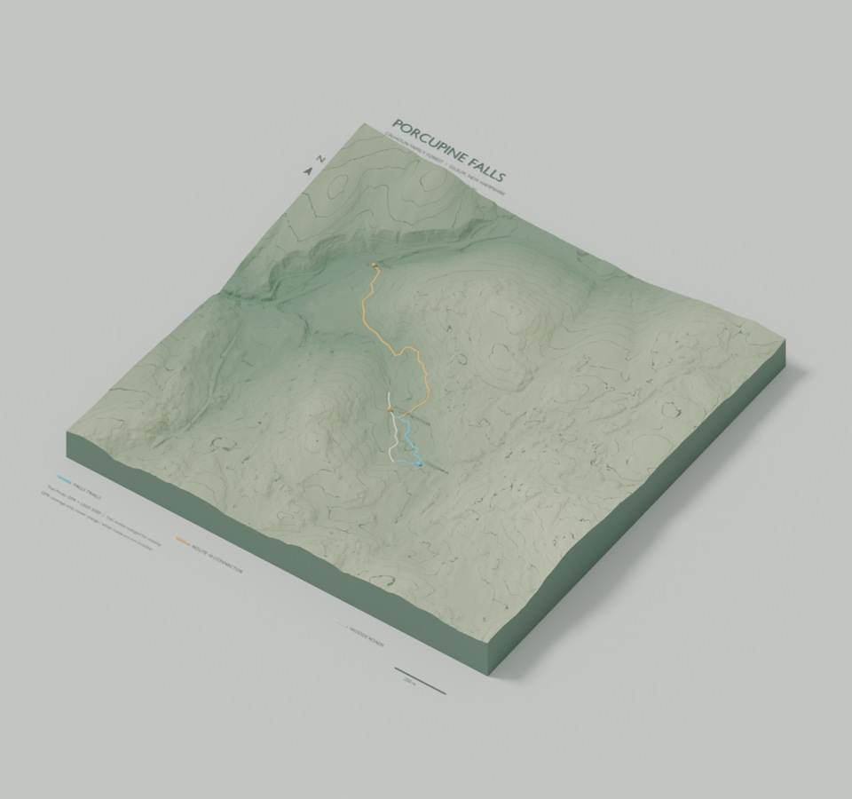

LUMINARY LABS · TERRAIN AR DEMO
A forest
in your hands.
Explore Calhoun Family Forest in Gilsum, New Hampshire. Scan the terrain card to bring Porcupine Falls into your camera. Tap trails and landmarks to explore. The landscape follows gently; supported phones can pin it in space so you can walk around.

Display the target on another screen or print it. Camera access stays on your device. Use Chrome on your Moto G64.